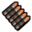

The Soldier
The Soldier is one of the three Offense classes in the game. He has a slow movement speed, but high and reliable burst damage in the form of his rocket launcher primary and Shotgun secondary. He is focused around being on the frontlines of any team fight as well as being able to help a team defend or push through a chokepoint. He is a core part of any team and his unlockable items often provide different offensive benefits such as increased damage on certain targets or utility benefits like passive health regeneration or resistance against damage.
A Sidegrade For The Soldier
A good example of one of these unlockable items is The Gunboats. The Gunboats replace the Soldier's secondary for a pair of boots that decrease the damage he takes when performing a Rocket Jump. This is a simple maneuver that has him shooting a rocket from his primary on the ground below him while simultaneously jumping. This propels him upward and gives him greater mobility, and the Guboats are a great tool to enable a playstyle that is more movement based.
The Heavy
The Heavy is a Defense oriented class. He is the slowest moving and highest health class in the game, making him the designated "Tank" for most fights. His default primary is a minigun that holds a large amount of ammo with a rapid rate of fire, giving him very high damage in his effective range. He also sports a shotgun secondary like the Soldier, of course being effective at close range to allow the Heavy to easily defend himself or not have to spin up his minigun to deal damage. The Heavy primarily relies on these two tools, but he can opt to replace the Shotgun with a secondary that provide great utility.
A Sidegrade For The Heavy
A good example of a Heavy sidegrade is the Sandvich. When a Heavy eats the Sandvich, he will quickly gain back 300 points of health over a short period of time before the eating animation concludes and the Sandvich has to recharge. This is a great utility item, as it provides him with a full health refill that he can take with him to any area of the map. The only downside is that he must rely on his melee or Minigun to deal damage, and the Minigun has a wind-up period that leaves him vulnerable. So he must choose between using a damaging secondary or a Healing secondary that he can even share with teammates by pressing the Alt-Fire button.
The Medic
The Medic is what many would consider the quintessential Support class for Team Fortress 2. He boasts a Syringe gun, a weapon that rapid fires damaging needles and does roughly 11-15 damage on average within normal scenarios. His truly special item comes in the form of the Medigun; A tool that allows you to connect a beam of healing energy to one teammate at a time. The Medigun also has an Ubercharge meter that gradually fills up to 100% charge as the Medic heals people. Once it has reached 100% on the meter he can press his Alt-Fire to activate the Ubercharge, granting him and his healing target 8 seconds of Invulnerability. This makes him great at supporting teammates by keeping them alive in a fight and granting them the means to push through a strong defensive hold.
A Sidegrade For The Medic
A great example of a secondary for the Medic is the Kritzkrieg, a medigun that replaces the Invulnerability Ubercharge with one that triples that healing target's damage output. It also gains it's Ubercharge at an increased rate, making it great for offensive pushes and getting large amounts of kills. This does have the trade-off of your target being fairly vulnerable while using Ubercharge, but with good coordination this won't usually be a problem. This is an excellent weapon design, making it stronger in a field that the default Medigun cannot match.